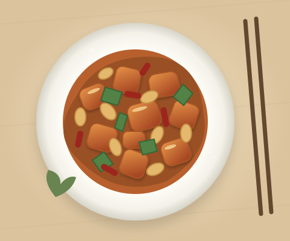

看懂一道菜
接收多视角图像与文本补充，理解菜品内容，整理名称、食材等商品信息。
多模态输入菜品标准化
拍照即上线。让多模态 Agent 理解菜品、查询商圈价格、生成营销文案，把繁琐的上单流程，变成一次轻松的确认。

鲜嫩鸡丁 · 香脆花生 · 经典川味
¥ 28 / 份面向餐饮中小商家的上单场景，
让理解、决策与工具调用形成完整链路。
接收多视角图像与文本补充，理解菜品内容，整理名称、食材等商品信息。
通过工具调用完成商圈价格查询、推荐定价与敏感词审查，连接商品上单的关键环节。
在菜品信息与推荐价格固定的前提下，优化营销表达，让内容更贴近商品与用户。
选择一道示例菜品，跟随 Agent 的处理步骤，
查看从输入到商品草稿的变化。
“一人份宫保鸡丁，鸡腿肉配花生，微辣。”
使用预设数据回放，不调用模型或商家接口。
将图文整理为结构化菜品信息
参考同类菜品价格，形成定价建议
生成商品描述，执行敏感词审查
集中展示字段，供商家确认
把零散的图像与文字，连接成一份完整的商品草稿。
点击「开始流程演示」
逐步查看预设商品信息。
高质量数据 → Agent 任务适配 → 文案优化。
三个阶段，共同服务于“拍照即上线”。
历史商家数据 → 高质量 SFT 数据
以 Qwen3-VL-Max 补全 CoT 轨迹，通过硬规则校验、多模型交叉评审、学生模型前向 Loss 筛选和 Milvus HNSW 去重。
移除历史弱监督信息，使用 LLaVA-OneVision-1.5、Gemma 3、InternVL 交叉评审，再结合训练难度与样本去重筛选数据。
Qwen3-VL-32B · 多模态 Agent
使用 3.6 万条 Agent 数据进行监督微调，适配菜品标准化、商圈查价、敏感词审查等工具调用任务。
把图文理解转化为稳定的结构化输出与工具调用，使模型能够衔接真实业务流程中的多个任务环节。
仅优化文案 · 保持商品事实不变
接入推荐侧离线 CTR 预估模型，以候选文案相较 SFT 文案的 CTR 相对提升构造奖励，进行策略优化。
结合 Clip-Higher、动态采样、Token 级策略损失与长度惩罚进行优化。这里仅展示方法概念，不提供训练或推理实现。
以下指标来自项目简历描述。
离线评估与任务指标分开呈现。
Agent 上单任务完成情况
结构化工具调用格式指标
项目描述的处理耗时量级
相较 SFT，提升 0.09 个百分点
CTR 为推荐侧模型的离线预估结果，不代表线上 A/B 实验收益；简历未提供测试集规模与详细评测协议。本页交互演示为预设流程，不用于复现上述指标。